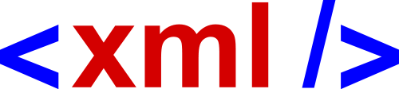
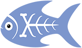
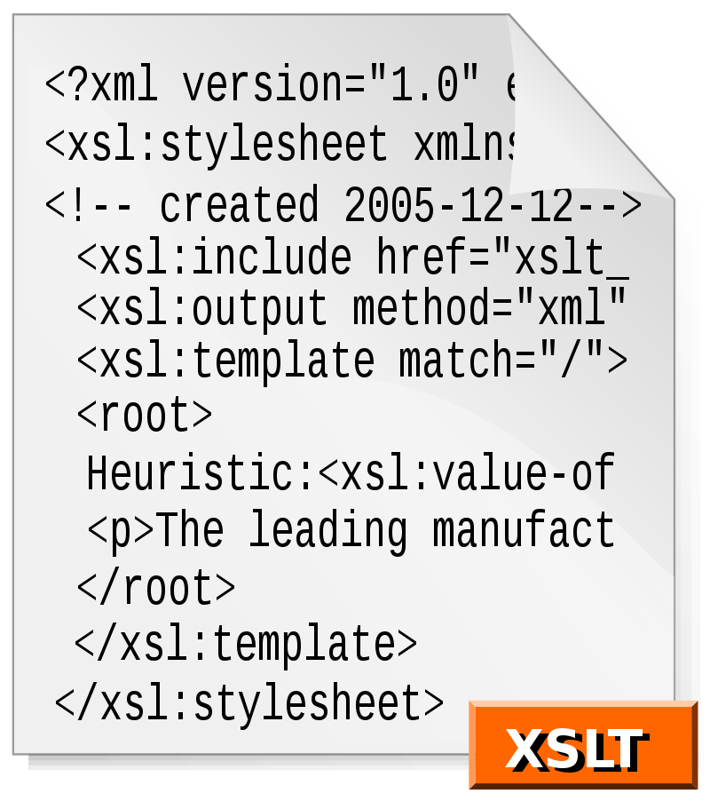
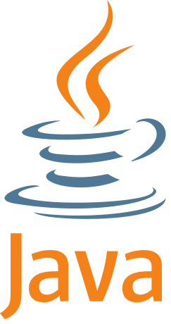
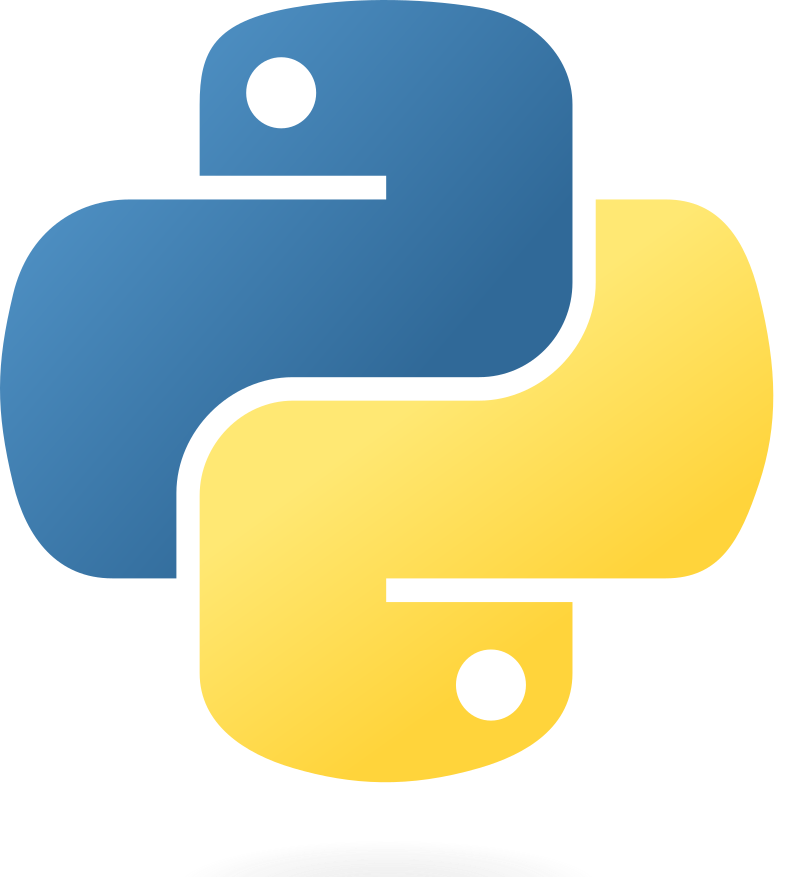
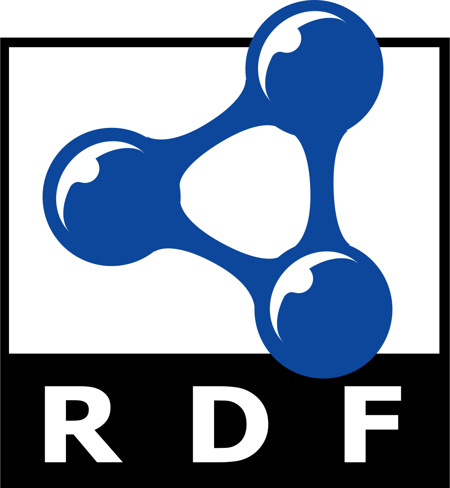
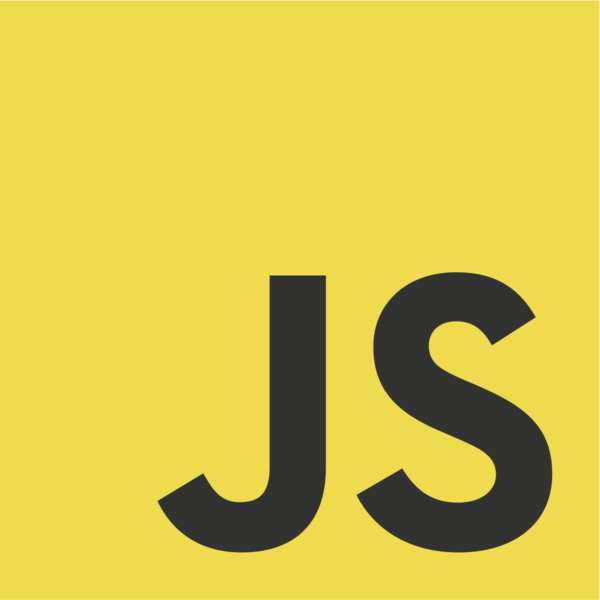
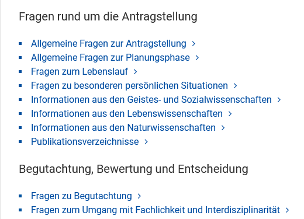
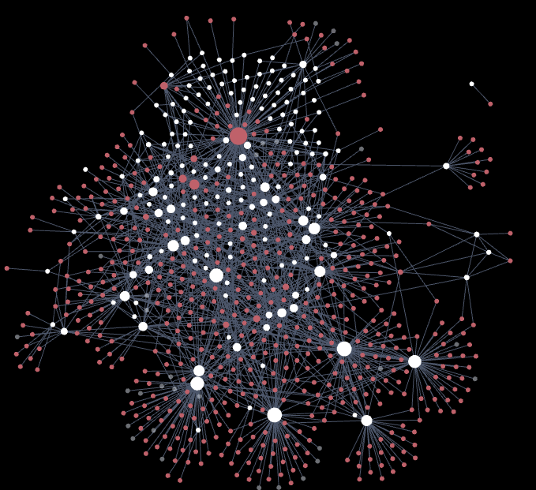

Digitale Forschungsdienste
HA I - Forschung und Entwicklung
Wer sind wir?
Jonas Müller-Laackman
Referent
David Maus
Abteilungsleiter
Was sind "Digitale Forschungsdienste"?
Was bietet das Referat?
Technologieberatung










Projekt- und Antragsberatung

Datenmodellierung

Lehre und Weiterbildung
Vernetzung und Austausch
Aktuelle Projekte
- Text- und Datamining-Antrag
- Jungius-Nachlass
- Katalog Digitale Bestände
- Veranstaltungsreihe Digital Humanities - Wie geht das?
Kommende Veranstaltungen
11.01.2023 14:00
Vortrag zu "Digital Humanities" im Rahmen der Mittwochsveranstaltungen
31.01.2023 17:00
Graphen: Theorie und Technologien
27.02..2023 09:00
Workshop: Neo4J für Korrespondenzdaten
Vielen Dank.
jonas.mueller-laackman@sub.uni-hamburg.de
forschungsdienste@sub.uni-hamburg.de